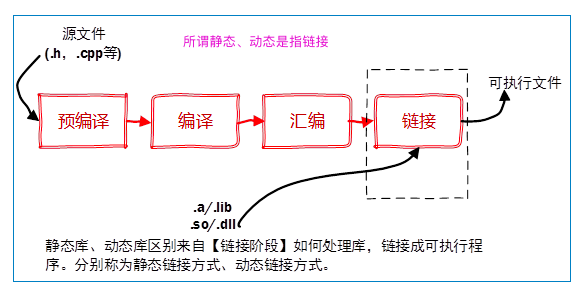
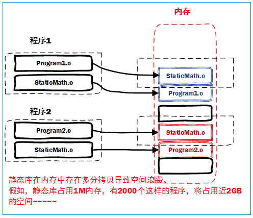
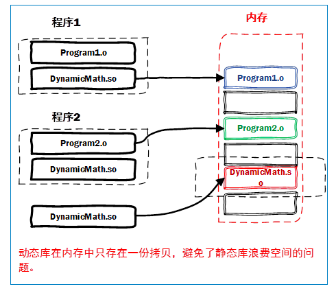

vim_git_cmake
Vim简单配置¶
filetype plugin on
" 按 F5 执行当前 Python 代码"
map <F5> :call PRUN()<CR>
func! PRUN()
exec "w"
if &filetype == 'python'
exec "!python %"
endif
endfunc
"更多配色方案:https://hub.fastgit.org/wklken/k-vim"
"colorscheme desert 设定配色方案"
"python 自动缩进"
set filetype=python
au BufNewFile,BufRead *.py,*.pyw setf python
set helplang=cn "中文帮助文档(前提是下了中文包)
syntax enable
syntax on " 自动语法高亮
set guifont=Consolas:h12:cANSI "英文字体
set guifontwide=SimSun-ExtB:h12:cGB2312
autocmd FileType python set tabstop=4 | set expandtab | set autoindent
set autoread " 当文件在外部被修改时，自动重新读取
set history=400 "vim记住的历史操作的数量，默认的是20
set nocompatible "使用vim自己的键盘模式,而不是兼容vi的模式
set confirm "处理未保存或者只读文件时,给出提示
set smartindent "智能对齐"
set shiftwidth=4
"设置编码,支持中文不乱码"
set fileencodings=utf-8,ucs-bom,gb18030,gbk,gb2312,cp936
set termencoding=utf-8
set encoding=utf-8
"显示行号"
set nu
set number
"突出显示当前行"
set cursorline
set cul "cursorline的缩写形式"
set autoindent "继承前一行的缩进方式，适用于多行注释"
set laststatus=2 "总是显示状态栏"
set ruler "显示光标当前位置"
set ignorecase "查找时忽略大小写"
set nohlsearch "高亮显示查找内"
"让vimrc配置变更立即生效"
autocmd BufWritePost $MYVIMRC source $MYVIMRC
git配置¶
# 因为Git是分布式版本控制系统，所以需要填写用户名和邮箱作为一个标识
# git config --global 参数，有了这个参数，表示你这台机器上所有的Git仓库都会使用这个配置，当然你也可以对某个仓库指定的不同的用户名和邮箱。
git config --global user.name "用户名"
git config --global user.email "邮箱"
# 提交代码
mkdir MyProject && cd MyProject # 创建项目名
git init # 把目录变成git可以管理的仓库,项目下会多一个.git文件
vi readme.txt # 111111 在该项目下写代码即可，本次使用readme.txt作为演示
git add readme.txt # 把内容添加到暂存区里
git commit -m "提交注释" # 把文件提交到仓库
git status # 查看是否还有文件未提交
vi readme.txt # append 222222,修改readme.txt
git status # 这个命令告诉我们 readme.txt文件已被修改，但是未被提交的修改
git diff readme.txt # 看下readme.txt文件到底改了什么内容
git add readme.txt # 把内容添加到暂存区里
git status # 提交之前查看状态
git commit -m "再次添加注释" # 把文件提交到仓库
# 版本回退
vi readme.txt # append 333333,readme.txt文件总共进行了三次更改
git log # 查看历史记录，显示从最近到最远的显示日志，默认显示详细信息
git log --pretty=oneline # 显示简洁的历史信息，显示3次更改
# 开始版本回退
git reset --hard HEAD^ # 回退到上个版本
git reset --hard HEAD^^ # 回退到上上个版本,依次类推，如果想回退到前100个版本呢？
git reset --hard HEAD~100 # 回退到前100个版本
git log --pretty=oneline # 显示2次更改§
# 如何获取每次更改后的版本号呢？
git reflog # 即使我执行过一次回退，但是我忘记了这次回退，也可以显示出来
git reset --hard 版本号(6fcfc89) # 如果回退错了，想返回到最新，也可以直接用最新版本号来回退
# 工作区和暂存区
# 工作区:就是你在电脑上看到的目录。
# 暂存区:工作区有一个隐藏目录.git,这个不属于工作区，这是版本库,版本库里面有个stage的暂存区，还有Git为我们自动创建了第一个分支master,以及指向master的一个指针HEAD。
vi readme.txt # append 555555,突然发现添加的内容有错误，但是你忘记了修改了啥如何撤销？当然是在未提交之前
git status # 查看一下是不是未提交，如果未提交
git checkout --readme.txt # git checkout -- file 可以丢弃在工作区的修改。
# 注意 命令git checkout -- readme.txt 中的 -- 很重要，如果没有 -- 的话，那么命令变成创建分支了。
# 远程仓库
ssh-keygen -t rsa –C “youremail@example.com” # 创建ssh秘钥，找到.ssh/id_rsa.pub公钥
# 登录github,打开” settings”中的SSH Keys页面，然后点击“Add SSH Key”,填上任意title，在Key文本框里黏贴id_rsa.pub文件的内容
# 我们已经在本地创建了一个Git仓库后，又想在github创建一个Git仓库，并且希望这两个仓库进行远程同步，这样github的仓库可以作为备份，又可以其他人通过该仓库来协作，在github上创建一个新仓库，仓库名保持一致，其他默认
git remote add origin https://github.com/tugenhua0707/testgit.git # 后面的链接改为自己的
# 由于远程库是空的，我们第一次推送master分支时，加上了 –u参数，Git不但会把本地的master分支内容推送的远程新的master分支，还会把本地的master分支和远程的master分支关联起来，在以后的推送或者拉取时就可以简化命令。
git push -u origin master # 把本地仓库分支master内容推到远程仓库中去
git push origin master # 以后用这个命令就可以了
# 创建其他分支
git checkout -b dev # 创建并切换分支为dev，git checkout -b相当于 git branch dev+git checkout dev
git branch # 查看当前分支
# 把dev分支上的内容合并到分支master上了，可以在master分支上，使用如下命令 git merge dev
git merge dev # 把dev分支上的内容合并到分支master上了,需在master分支上执行该命令，这样就合并了两个分支
git branch -d dev # 删除dev分支，因为已经合并到master上了
# 解决冲突，假设readme.txt文件，dev分支上添加了888888，而master分支上添加了999999
git merge dev # 会报错，有冲突，查看readme.txt会出现冲突的代码位置:<<<HEAD是指主分支修改的内容，>>>>>dev 是指dev上修改的内容
# 解决:修改代码和master分支上的内容保持一致即可
CMake¶
基础用法(外部构建)
# 1.变量引用方式,其实就是表示变量的值:${变量}，IF语句是直接使用变量名引用，而不需要${}。如果使用了${}去应用变 量，其实 IF 会去判断名为${}所代表的值的变量，那当然是不存在的了。
# 2.指令中参数格式:指令(参数1 参数2 参数3)，指令是大小写无关的，参数和变量是大小写相关的。但，推荐你全部使用大写指令。
# 3.需要为任何子目录建立CMakeLists.txt文件
cmake_minimum_required(VERSION 3.15)
# PROJECT(projectname [CXX] [C] [Java]),可以指定工程名称+语言
# 这个指令默认生成两个变量:Test_BINARY_DIR+Test_SOURCE_DIR,但是cmake系统也预定义了:PROJECT_BINARY_DIR+PROJECT_SOURCE_DIR(建议使用)
project(Test) # 工程名和生成的可执行文件hello是没有任何关系的
# SET 指令可以用来显式的定义变量,当然可以指定多个.c文件，SET(SRC_LIST main.c t1.c t2.c)
set(CMAKE_CXX_STANDARD 14)
set(SRC_LIST main.cpp) # 等价于set(SRC_LIST "main.cpp")，如果某文件名包含空格:fu nc.c，必须带双引号
# 向终端输出用户定义的信息，包含了三种类型: SEND_ERROR，产生错误，生成过程被跳过。 SATUS，输出前缀为—的信息。FATAL_ERROR，立即终止所有 cmake 过程.
MESSAGE(STATUS "This is BINARY dir " ${PROJECT_BINARY_DIR}) # 编译所在路径，一般是build文件路径
MESSAGE(STATUS "This is SOURCE dir " ${PROJECT_SOURCE_DIR}) # 指代工程路径，绝对路径就到工程名称
#定义了这个工程会生成一个文件名为 hello 的可执行文件，相关的源文件是 SRC_LIST 中 定义的源文件列表， 本例中你也可以直接写成 ADD_EXECUTABLE(hello main.c)。
add_executable(Test ${SRC_LIST}) # 可执行文件名，你可以随便起名称，一般和工程名相同
# 和cmake同级目录下构建build文件夹，然后cd 进入
# 生成MakeFile文件:cmake ..
# 构建工程:make,如果想看到详细构建过程，make VERBOSE=1
# 清理工程:make clean
构建整个工程用法
-src
|-CMakeLists.txt
|-main.cpp
-build
|-要执行cmake ..的编译文件
-doc # 用于防止本工程的文档
|-hello.txt # 写一些描述性内容
-runhello.sh # 调用结果二进制，本次内容为hello
-COPYRIGHT # 添加文本文件
-README # 添加文本文件
-CMakeLists.txt
# 最终安装这些文件：将 hello 二进制与 runhello.sh 安装至/usr/bin，将 doc 目录 的内容以及 COPYRIGHT/README 安装到/usr/share/doc/cmake/t2
# 注意，需要为任何子目录建立一个CMakeLists.txt文件
# src/CMakeLists.txt的编写
ADD_EXECUTABLE(hello main.c)
# 工程下CMakeLists.txt的编写
PROJECT(HELLO)
# ADD_SUBDIRECTORY(source_dir [binary_dir] [EXCLUDE_FROM_ALL])
# 用于向当前工程添加存放源文件的子目录,并可以指定中间二进制和目标二进制存 放的位置。
ADD_SUBDIRECTORY(src bin) # 指定编译输出(包含编译中间结果)路径为 bin 目录,如果不指定那么编译结果(包括中间结果)都将存放在 build/src 目录(这个目录跟原有的 src 目录对应)，指定 bin 目录后，相当于在编译时 将 src 重命名为 bin，所有的中间结果和目标二进制都将存放在 bin 目录。
#然后建立 build 目录，进入 build 目录进行外部编译。
#cmake ..
#make
#构建完成后，你会发现生成的目标文件 hello 位于 build/bin 目录中。
# 当然，如果不想编译输出直接放在build/bin目录下，可以通过set指令重新定义EXECUTABLE_OUTPUT_PATH 和 LIBRARY_OUTPUT_PATH 变量 来指定最终的目标二进制的位置(指最终生成的 hello 或者最终的共享库，不包含编译生成 的中间文件),但是两行放在哪呢？把握一个简单的原则，在哪里 ADD_EXECUTABLE 或 ADD_LIBRARY， 如果需要改变目标存放路径，就在哪里加入上述的定义。这里放在src/CMakeLists.txt里面
SET(EXECUTABLE_OUTPUT_PATH ${PROJECT_BINARY_DIR}/bin) # 二进制的输出路径
SET(LIBRARY_OUTPUT_PATH ${PROJECT_BINARY_DIR}/lib) # 库的输出路径，常用于共享库和静态库
# 安装项目:一个项目clone下来后是需要安装的，例如opencv，安装到本地后使用非常方便，下面介绍hello项目的安装
make install # 直接安装，默认安装路径:/usr/bin目录
make install DESTDIR=/tmp/test # 指定目录安装:安装到/tmp/test/usr/bin目录（打包时常用）
# INSTALL命令:用于定义安装规则，安装的内容可以包括目标二进制、动态库、静态库以及 文件、目录、脚本等
# 1.目标文件安装
INSTALL(TARGETS targets...# 后面跟的就是我们通过 ADD_EXECUTABLE 或者 ADD_LIBRARY 定义的 目标文件，可能是可执行二进制、动态库、静态库
[[ARCHIVE|LIBRARY|RUNTIME]# 目标类型也就相对应的有三种，ARCHIVE 特指静态库，LIBRARY 特指动态库，RUNTIME 特指可执行目标二进制。
[DESTINATION <dir>] # 定义了安装的路径，如果路径以/开头，那么指的是绝对路径，这时候 CMAKE_INSTALL_PREFIX 其实就无效了。如果你希望使用 CMAKE_INSTALL_PREFIX 来 定义安装路径，就要写成相对路径，即不要以/开头，那么安装后的路径就是 ${CMAKE_INSTALL_PREFIX}/<DESTINATION 定义的路径>,注意相对路径要不要以/结尾(abc,abc/)，如果目录名不以/结尾，那么这个目录将被安装为目标路径下的 abc，如果目录名以/结尾， 代表将这个目录中的内容安装到目标路径，但不包括这个目录本身。
[PERMISSIONS permissions...]
[CONFIGURATIONS [Debug|Release|...]]
[COMPONENT <component>]
[OPTIONAL] ] [...])
# 举例子
INSTALL(TARGETS myrun mylib mystaticlib # DESTINATION描述的是安装路径
RUNTIME DESTINATION bin # 可执行二进制myrun安装到${CMAKE_INSTALL_PREFIX}/bin目录
LIBRARY DESTINATION lib# 动态库lib mylib 安装到${CMAKE_INSTALL_PREFIX}/lib 目录
ARCHIVE DESTINATION libstatic)# 静态库lib mystaticlib 安装到${CMAKE_INSTALL_PREFIX}/libstatic 目录
# 2.普通文件安装，可用于安装一般文件，并可以指定访问权限，文件名是此指令所在路径下的相对路径
INSTALL(FILES files... DESTINATION <dir> # dir写相对路径为好
[PERMISSIONS permissions...] # 后面的可以用于指定权限:默认644权限
[CONFIGURATIONS [Debug|Release|...]]
[COMPONENT <component>]
[OPTIONAL] ] [...])
# 3.非目标文件的可执行程序安装(比如脚本等)
INSTALL(PROGRAMS files... DESTINATION <dir> # dir写相对路径为好
[PERMISSIONS permissions...] # 后面的可以用于指定权限:默认755权限
[CONFIGURATIONS [Debug|Release|...]]
[COMPONENT <component>]
[OPTIONAL] ] [...])
# 介绍安装步骤
# 1，安装 COPYRIGHT|README，直接修改主工程文件 CMakelists.txt，加入以下指令：
INSTALL(FILES COPYRIGHT README DESTINATION share/doc/cmake/t2)
# 2，安装 runhello.sh，直接修改主工程文件 CMakeLists.txt，加入如下指令：
INSTALL(PROGRAMS runhello.sh DESTINATION bin)
# 3，安装 doc 中的 hello.txt，这里有两种方式：
# * 一是通过在 doc 目录建立 CMakeLists.txt 并将 doc 目录通过 ADD_SUBDIRECTORY 加入工程来完成。
# * 另一种方法 是直接在工程目录通过 INSTALL(DIRECTORY 来完成)，前者比较简单，各位可以根据兴趣自己完成，我们来尝试 后者，顺便演示以下 DIRECTORY 的安装。因为 hello.txt 要安装到/<prefix>/share/doc/cmake/t2，所以我们不能直接安装 整个 doc 目录，这里采用的方式是安装 doc 目录中的内容，也就是使用”doc/”，在工程文件中添加
INSTALL(DIRECTORY doc/ DESTINATION share/doc/cmake/t2)
# 编译和安装，现在进入 build 目录进行外部编译，注意使用 CMAKE_INSTALL_PREFIX 参数，这里我们 将它安装到了/tmp/t2 目录
cmake -DCMAKE_INSTALL_PREFIX=/tmp/t2/usr ..
# 如果你想直接安装到系统，可以使用 cmake -DCMAKE_INSTALL_PREFIX=/usr ..
# 如果没有定义 CMAKE_INSTALL_PREFIX，默认会安装到:/usr/local
make
make install
# 让我们进入/tmp/t2 目录看一下安装结果：
./usr
./usr/share
./usr/share/doc
./usr/share/doc/cmake
./usr/share/doc/cmake/t2
./usr/share/doc/cmake/t2/hello.txt
./usr/share/doc/cmake/t2/README
./usr/share/doc/cmake/t2/COPYRIGHT
./usr/bin
./usr/bin/hello
./usr/bin/runhello.sh
静态库与动态库构建
# 目录结构
-lib
|-hello.c
|-hello.h
|-CMakeLists.txt
-CMakeLists.txt
# 工程目录下 CMakeLists.txt
PROJECT(HELLOLIB)
ADD_SUBDIRECTORY(lib <目录>) # 其实也可以在这里指定.so文件的输出位置
# lib/CMakeLists.txt
SET(LIBHELLO_SRC hello.cpp)
SET(LIBRARY_OUTPUT_PATH ${PROJECT_BINARY_DIR}/aa)# 指定.so文件的输出位置
# 解释附录1
ADD_LIBRARY(hello SHARED ${LIBHELLO_SRC}) # 添加动态库 xxx.so
# 或者,如果动态库和静态库的libname名称相同，那么后者构建指令失效,方案一:采用不同名方案
ADD_LIBRARY(hello_static STATIC ${LIBHELLO_SRC}) # 添加静态库 xxx.a
# 方案二:如果想静态库和动态库同名且同时存在，需要在lib/CMakeLists.txt中添加如下指令，详解见附录2
SET_TARGET_PROPERTIES(hello_static PROPERTIES OUTPUT_NAME "hello")
# 指定动态库版本，一般而言动态库是应该包含一个版本号的，例如:libhello.so.1.2
# VERSION 指代动态库版本，SOVERSION 指代 API 版本。
SET_TARGET_PROPERTIES(hello PROPERTIES VERSION 1.2 SOVERSION 1)
# 这样构建后会生成三个文件
libhello.so.1.2
libhello.so.1->libhello.so.1.2
libhello.so ->libhello.so.1
# 附录1.指令 ADD_LIBRARY详解
ADD_LIBRARY(libname # 不需要完全填写libhello.so，只需要填写hello，cmake系统会自动生成.x文件
[SHARED|STATIC|MODULE] # 动态库|静态库|类似动态库，dyld 的系统有效
[EXCLUDE_FROM_ALL]# 这个库不会被默认构建
source1 source2 ... sourceN)
# 附录2:SET_TARGET_PROPERTIES,这条指令可以用来设置输出的名称，对于动态库，还可以用来指定动态库版本和 API 版本
SET_TARGET_PROPERTIES(target1 target2 ... PROPERTIES prop1 value1 prop2 value2 ...)
#编译
mkdir build && cd build
cmake ..
make
# 可以在build/aa目录下得到一个libhello.so
# 安装共享库和头文件，我们需要将 libhello.a, libhello.so.x 以及 hello.h 安装到系统目 录，才能真正让其他人开发使用
# 需要在lib/CMakeLists.txt中添加如下指令
INSTALL(TARGETS hello hello_static
LIBRARY DESTINATION lib
ARCHIVE DESTINATION lib)# 注意，静态库要使用 ARCHIVE 关键字
INSTALL(FILES hello.h DESTINATION include/hello)
# 通过:
cmake -DCMAKE_INSTALL_PREFIX=/usr ..
make
make install
# 我们就可以将头文件和共享库安装到系统目录/usr/lib 和/usr/include/hello 中了。
使用共享库和头文件
// 1.建立 src 目录，编写源文件 main.c
#include <hello.h>
int main() {
HelloFunc();// 这个函数是写在原来的hell.cpp中的，声明在hello.h中的
return 0;
}
// 编写工程主文件 CMakeLists.txt
PROJECT(NEWHELLO)
ADD_SUBDIRECTORY(src)
// 编写 src/CMakeLists.txt
ADD_EXECUTABLE(main main.c)
// 开始构建，build ...,出错了，看看为啥出错，用make VERBOSE=1来详细构建打印构建过程，没有<hello.h>文件，hello.h 位于/usr/include/hello 目录中，并没有位于系统标准的头文件路径，如果直接使用 #include <hello/hello.h>，那这一节也没啥可讲的啦
// 2.引入头文件搜索路径，为了让我们的工程能够找到 hello.h 头文件，我们需要引入一个新的指令
//在src/CMakeLists.txt 中添加一个头文件搜索路径
INCLUDE_DIRECTORIES(/usr/include/hello)
// 指令详解
INCLUDE_DIRECTORIES([AFTER|BEFORE]
[SYSTEM] dir1 dir2 ...)
// 这条指令可以用来向工程添加多个特定的头文件搜索路径，路径之间用空格分割，如果路径中包含了空格，可以使用双引号将它括起来，默认的行为是追加到当前的头文件搜索路径的后面，你可以通过两种方式来进行控制搜索路径添加的方式：
//１，CMAKE_INCLUDE_DIRECTORIES_BEFORE，通过 SET 这个 cmake 变量为 on，可以 将添加的头文件搜索路径放在已有路径的前面。
//２，通过 AFTER 或者 BEFORE 参数，也可以控制是追加还是置前。
// 重新构建会出现HelloFunc找不到的错误，这是因为我们并没有 link 到共享库 libhello 上，只包含头文件当然不能使用了
// 3.为target添加共享库,在src/CMakeLists.txt 中添加如下指令
TARGET_LINK_LIBRARIES(main hello)// hello也可以写成libhello.so,构建成功后悔得到main的可执行文件
// 指令详解
// 这里需要引入两个新的指令:LINK_DIRECTORIES 和 TARGET_LINK_LIBRARIES
LINK_DIRECTORIES(directory1 directory2 ...) // 添加非标准的共享库搜索路径,比如，在工程内部同时存在共享库和可 执行二进制，在编译时就需要指定一下这些共享库的路径。这个例子中我们没有用到这个指令。
TARGET_LINK_LIBRARIES(target library1 // 这个指令可以用来为 target 添加需要链接的共享库
<debug | optimized> library2
...)
// 4.如何链接到静态库呢,很简单
TARGET_LINK_LIBRARIES(main libhello.a)
两个特殊的环境变量(不是cmake变量)
CMAKE_INCLUDE_PATH 和 CMAKE_LIBRARY_PATH
# 用法:在 bash 中用 export 或者在 csh 中使用 set 命令设置
# 或者:
CMAKE_INCLUDE_PATH=/home/include
cmake ..
# 等方式。
# 主要是解决:头文件没有存放在常规路径(/usr/include,/usr/local/include 等),则可以通过这些变量就行弥补。
# 我们以本例中的 hello.h 为例，它存放在/usr/include/hello 目录，所以直接查找肯定是找不到的。前面我们直接使用了绝对路径 INCLUDE_DIRECTORIES(/usr/include/hello)告诉工程这个头文件目录。为了将程序更智能一点，我们可以使用 CMAKE_INCLUDE_PATH 来进行，使用 bash 的方法 如下：
export CMAKE_INCLUDE_PATH=/usr/include/hello
# 然后在头文件中将 INCLUDE_DIRECTORIES(/usr/include/hello)替换为：
FIND_PATH(myHeader hello.h) # FIND_PATH 用来在指定路径中搜索文件名,这里我们没有指定路径，但是，cmake 仍然可以帮我们找到 hello.h 存放的路径，就是因 为我们设置了环境变量 CMAKE_INCLUDE_PATH。
IF(myHeader)
INCLUDE_DIRECTORIES(${myHeader})
ENDIF(myHeader)
# 以此为例，CMAKE_LIBRARY_PATH 可以用在 FIND_LIBRARY 中。
Cmake常用变量和常用环境变量
# 1.cmake变量${},IF语句中直接使用变量名
# 2.cmake变量的隐式定义(义<projectname>_BINARY_DIR 和<projectname>_SOURCE_DIR)和显示定义(SET(HELLO_SRC main.c))
# 3.cmake常用变量
CMAKE_BINARY_DIR == PROJECT_BINARY_DIR == <projectname>_BINARY_DIR # 指的是工程编译发生的目录
CMAKE_SOURCE_DIR == PROJECT_SOURCE_DIR == <projectname>_SOURCE_DIR # 指的是工程顶层目录
CMAKE_CURRRENT_BINARY_DIR # 指的是 target 编译目录，使用我们上面提到的 ADD_SUBDIRECTORY(src bin)可以更改这个变量的值。使用 SET(EXECUTABLE_OUTPUT_PATH <新路径>)并不会对这个变量造成影响，它仅仅 修改了最终目标文件存放的路径。
CMAKE_CURRENT_LIST_FILE # 输出调用这个变量的 CMakeLists.txt 的完整路径
CMAKE_CURRENT_LIST_LINE # 输出这个变量所在的行
CMAKE_MODULE_PATH # 这个变量用来定义自己的 cmake 模块所在的路径。如果你的工程比较复杂，有可能会自己 编写一些 cmake 模块，这些 cmake 模块是随你的工程发布的，为了让 cmake 在处理 CMakeLists.txt 时找到这些模块，你需要通过 SET 指令，将自己的 cmake 模块路径设 置一下。比如 SET(CMAKE_MODULE_PATH ${PROJECT_SOURCE_DIR}/cmake) 这时候你就可以通过 INCLUDE 指令来调用自己的模块了。
EXECUTABLE_OUTPUT_PATH 和 LIBRARY_OUTPUT_PATH # 分别用来重新定义最终结果的存放目录
PROJECT_NAME # 返回通过 PROJECT 指令定义的项目名称
# 4.cmake 调用环境变量的方式
MESSAGE(STATUS "HOME dir: $ENV{HOME}") # 使用$ENV{NAME}指令就可以调用系统的环境变量了。
SET(ENV{变量名} 值) # 设置环境变量的方式
# 1.CMAKE_INCLUDE_CURRENT_DIR:自动添加 CMAKE_CURRENT_BINARY_DIR 和 CMAKE_CURRENT_SOURCE_DIR 到当前处理 的 CMakeLists.txt。相当于在每个 CMakeLists.txt 加入：
INCLUDE_DIRECTORIES(${CMAKE_CURRENT_BINARY_DIR} ${CMAKE_CURRENT_SOURCE_DIR})
# 2.CMAKE_INCLUDE_DIRECTORIES_PROJECT_BEFORE:将工程提供的头文件目录始终至于系统头文件目录的前面，当你定义的头文件确实跟系统发生冲突时可以提供一些帮助。
# 3.CMAKE_INCLUDE_PATH 和 CMAKE_LIBRARY_PATH 我们在上一节已经提及。
# 5.系统信息
1,CMAKE_MAJOR_VERSION，CMAKE 主版本号，比如 2.4.6 中的 2
2,CMAKE_MINOR_VERSION，CMAKE 次版本号，比如 2.4.6 中的 4
3,CMAKE_PATCH_VERSION，CMAKE 补丁等级，比如 2.4.6 中的 6
4,CMAKE_SYSTEM，系统名称，比如 Linux-2.6.22
5,CMAKE_SYSTEM_NAME，不包含版本的系统名，比如 Linux
6,CMAKE_SYSTEM_VERSION，系统版本，比如 2.6.22
7,CMAKE_SYSTEM_PROCESSOR，处理器名称，比如 i686.
8,UNIX，在所有的类 UNIX 平台为 TRUE，包括 OS X 和 cygwin 9,WIN32，在所有的 win32 平台为 TRUE，包括 cygwin
# 6:主要的开关选项
# 1，CMAKE_ALLOW_LOOSE_LOOP_CONSTRUCTS，用来控制 IF ELSE 语句的书写方式
# 2，BUILD_SHARED_LIBS,这个开关用来控制默认的库编译方式，如果不进行设置，使用 ADD_LIBRARY 并没有指定库 类型的情况下，默认编译生成的库都是静态库。 如果 SET(BUILD_SHARED_LIBS ON)后，默认生成的为动态库。
# ３，CMAKE_C_FLAGS 设置 C 编译选项，也可以通过指令 ADD_DEFINITIONS()添加。
# 4，CMAKE_CXX_FLAGS 设置 C++编译选项，也可以通过指令 ADD_DEFINITIONS()添加。
CMake基本指令
# 1，ADD_DEFINITIONS，向 C/C++编译器添加-D 定义，比如:
ADD_DEFINITIONS(-DENABLE_DEBUG -DABC)# 参数之间用空格分割。 如果你的代码中定义了#ifdef ENABLE_DEBUG #endif，这个代码块就会生效。如果要添加其他的编译器开关，可以通过 CMAKE_C_FLAGS 变量和 CMAKE_CXX_FLAGS 变 量设置。
# ２，ADD_DEPENDENCIES定义 target 依赖的其他target，确保在编译本target之前，其他的target已经被构建。
ADD_DEPENDENCIES(target-name depend-target1 depend-target2 ...)
# ３，ADD_EXECUTABLE、ADD_LIBRARY、ADD_SUBDIRECTORY 前面已经介绍过了，这里不再罗唆。
# ４，ADD_TEST 与 ENABLE_TESTING 指令。 ENABLE_TESTING 指令用来控制 Makefile 是否构建 test 目标，涉及工程所有目录。语 法很简单，没有任何参数，ENABLE_TESTING()，一般情况这个指令放在工程的主 CMakeLists.txt 中.ADD_TEST 指令的语法是:
ADD_TEST(testname # testname 是自定义的 test 名称
Exename arg1 arg2 ...)# Exename 可以是构建的目标文件也可以是外部脚本等 等。后面连接传递给可执行文件的参数
# 如果没有在同一个 CMakeLists.txt 中打开 ENABLE_TESTING()指令，任何 ADD_TEST 都是无效的。比如我们前面的 Helloworld 例子，可以在工程主 CMakeLists.txt 中添加
ADD_TEST(mytest ${PROJECT_BINARY_DIR}/bin/main)
ENABLE_TESTING()
# 生成 Makefile 后，就可以运行 make test 来执行测试了。
# ５，AUX_SOURCE_DIRECTORY 基本语法是：
AUX_SOURCE_DIRECTORY(dir VARIABLE)# 作用是发现一个目录下所有的源代码文件并将列表存储在一个变量中，这个指令临时被用来 自动构建源文件列表。因为目前 cmake 还不能自动发现新添加的源文件。 比如
AUX_SOURCE_DIRECTORY(. SRC_LIST) ADD_EXECUTABLE(main ${SRC_LIST})# 你也可以通过后面提到的 FOREACH 指令来处理这个 LIST
# 6，CMAKE_MINIMUM_REQUIRED 其语法为
CMAKE_MINIMUM_REQUIRED(VERSION versionNumber [FATAL_ERROR])
# 比如
CMAKE_MINIMUM_REQUIRED(VERSION 2.5 FATAL_ERROR) # 如果 cmake 版本小与 2.5，则出现严重错误，整个过程中止。
# 7，EXEC_PROGRAM 在 CMakeLists.txt 处理过程中执行命令，并不会在生成的 Makefile 中执行。具体语法 为：
EXEC_PROGRAM(Executable [directory in which to run]
[ARGS <arguments to executable>]
[OUTPUT_VARIABLE <var>]
[RETURN_VALUE <var>])
# 用于在指定的目录运行某个程序，通过 ARGS 添加参数，如果要获取输出和返回值，可通过 OUTPUT_VARIABLE 和 RETURN_VALUE 分别定义两个变量.这个指令可以帮助你在 CMakeLists.txt 处理过程中支持任何命令，比如根据系统情况去 修改代码文件等等。 举个简单的例子，我们要在 src 目录执行 ls 命令，并把结果和返回值存下来。可以直接在 src/CMakeLists.txt 中添加：
EXEC_PROGRAM(ls ARGS "*.c" OUTPUT_VARIABLE LS_OUTPUT RETURN_VALUE LS_RVALUE)
IF(not LS_RVALUE)
MESSAGE(STATUS "ls result: " ${LS_OUTPUT})
ENDIF(not LS_RVALUE)
# 在 cmake 生成 Makefile 的过程中，就会执行 ls 命令，如果返回 0，则说明成功执行， 那么就输出 ls *.c 的结果。关于 IF 语句，后面的控制指令会提到。
# 8，FILE 指令 文件操作指令，基本语法为:
FILE(WRITE filename "message to write"... )
FILE(APPEND filename "message to write"... )
FILE(READ filename variable)
FILE(GLOB variable [RELATIVE path] [globbing expressions]...)
FILE(GLOB_RECURSE variable [RELATIVE path] [globbing expressions]...)
FILE(REMOVE [directory]...)
FILE(REMOVE_RECURSE [directory]...)
FILE(MAKE_DIRECTORY [directory]...)
FILE(RELATIVE_PATH variable directory file)
FILE(TO_CMAKE_PATH path result)
FILE(TO_NATIVE_PATH path result)
# 9，INCLUDE 指令，用来载入 CMakeLists.txt 文件，也用于载入预定义的 cmake 模块.
INCLUDE(file1 [OPTIONAL])
INCLUDE(module [OPTIONAL])
# OPTIONAL参数的作用是文件不存在也不会产生错误。 你可以指定载入一个文件，如果定义的是一个模块，那么将在 CMAKE_MODULE_PATH 中搜 索这个模块并载入。载入的内容将在处理到 INCLUDE 语句是直接执行。
FIND_指令
FIND_FILE(<VAR> name1 path1 path2 ...) # VAR 变量代表找到的文件全路径，包含文件名
FIND_LIBRARY(<VAR> name1 path1 path2 ...) # VAR 变量表示找到的库全路径，包含库文件名
FIND_PATH(<VAR> name1 path1 path2 ...) # VAR 变量代表包含这个文件的路径。
FIND_PROGRAM(<VAR> name1 path1 path2 ...) # VAR 变量代表包含这个程序的全路径。
FIND_PACKAGE(<name> [major.minor] [QUIET] [NO_MODULE] [[REQUIRED|COMPONENTS] [componets...]]) # 用来调用预定义在 CMAKE_MODULE_PATH 下的 Find<name>.cmake 模块，你也可以自己 定义 Find<name>模块，通过 SET(CMAKE_MODULE_PATH dir)将其放入工程的某个目录 中供工程使用，我们在后面的章节会详细介绍 FIND_PACKAGE 的使用方法和 Find 模块的 编写。
FIND_LIBRARY 示例：
FIND_LIBRARY(libX X11 /usr/lib)
IF(NOT libX)
MESSAGE(FATAL_ERROR “libX not found”)
ENDIF(NOT libX)
控制指令
# 1,IF 指令,另外一个指令是 ELSEIF，总体把握一个原则，凡是出现 IF 的地方一定要有对应的 ENDIF.出现 ELSEIF 的地方，ENDIF 是可选的。基本语法为：
IF(expression)
# THEN section.
COMMAND1(ARGS ...)
COMMAND2(ARGS ...)
...
ELSE(expression)
# ELSE section.
COMMAND1(ARGS ...)
COMMAND2(ARGS ...)
...
ENDIF(expression)
# 表达式的使用方法
IF(var) # 如果变量不是：空，0，N, NO, OFF, FALSE, NOTFOUND 或 <var>_NOTFOUND 时，表达式为真。
IF(NOT var ) # 与上述条件相反。
IF(var1 AND var2)# 当两个变量都为真是为真。
IF(var1 OR var2)# 当两个变量其中一个为真时为真。
IF(COMMAND cmd)# 当给定的 cmd 确实是命令并可以调用是为真。
IF(EXISTS dir)或者 IF(EXISTS file)# 当目录名或者文件名存在时为真。
IF(file1 IS_NEWER_THAN file2)# 当 file1 比 file2 新，或者 file1/file2 其 中有一个不存在时为真，文件名请使用完整路径。
IF(IS_DIRECTORY dirname)# 当 dirname 是目录时，为真。
IF(variable MATCHES regex)
IF(string MATCHES regex) # 当给定的变量或者字符串能够匹配正则表达式 regex 时为真。比如：
IF("hello" MATCHES "ell")
MESSAGE("true")
ENDIF("hello" MATCHES "ell")
# 数字比较表达式
IF(variable LESS number)
IF(string LESS number)
IF(variable GREATER number)
IF(string GREATER number)
IF(variable EQUAL number)
IF(string EQUAL number)
# 按照字母序的排列进行比较.
IF(variable STRLESS string)
IF(string STRLESS string)
IF(variable STRGREATER string)
IF(string STRGREATER string)
IF(variable STREQUAL string)
IF(string STREQUAL string)
IF(DEFINED variable)# 如果变量被定义，为真。
# 一个小例子，用来判断平台差异： I
F(WIN32)
MESSAGE(STATUS “This is windows.”)
#作一些 Windows 相关的操作
ELSE(WIN32)
MESSAGE(STATUS “This is not windows”)
#作一些非 Windows 相关的操作
ENDIF(WIN32)
#上述代码用来控制在不同的平台进行不同的控制，但是，阅读起来却并不是那么舒服， ELSE(WIN32)之类的语句很容易引起歧义。
# 这就用到了我们在“常用变量”一节提到的 CMAKE_ALLOW_LOOSE_LOOP_CONSTRUCTS 开关。 可以 SET(CMAKE_ALLOW_LOOSE_LOOP_CONSTRUCTS ON) 这时候就可以写成:
IF(WIN32)
ELSE()
ENDIF()
# 如果配合 ELSEIF 使用，可能的写法是这样:
IF(WIN32)
#do something related to WIN32
ELSEIF(UNIX)
#do something related to UNIX
ELSEIF(APPLE)
#do something related to APPLE ENDIF(WIN32)
# 2.WHELE指令，其真假判断条件可以参考 IF 指令。
WHILE(condition)
COMMAND1(ARGS ...)
COMMAND2(ARGS ...) ...
ENDWHILE(condition)
# 3.FOREACH指令，三种形式
# 1.列表
FOREACH(loop_var arg1 arg2 ...)
COMMAND1(ARGS ...)
COMMAND2(ARGS ...)
...
ENDFOREACH(loop_var)
# 像我们前面使用的 AUX_SOURCE_DIRECTORY 的例子
AUX_SOURCE_DIRECTORY(. SRC_LIST)
FOREACH(F ${SRC_LIST})
MESSAGE(${F})
ENDFOREACH(F)
# 2.范围
FOREACH(loop_var RANGE total)
ENDFOREACH(loop_var)
# 举例子:从 0 到 total 以１为步进
FOREACH(VAR RANGE 10)
MESSAGE(${VAR})
ENDFOREACH(VAR)
# 3.范围和步进
FOREACH(loop_var RANGE start stop [step])
ENDFOREACH(loop_var)
# 从 start 开始到 stop 结束，以 step 为步进， 举例如下
FOREACH(A RANGE 5 15 3)
MESSAGE(${A})
ENDFOREACH(A) # 5 8 11 14
# 这个指令需要注意的是，直到遇到 ENDFOREACH 指令，整个语句块才会得到真正的执行。
Find_PACKAGE
FIND_PACKAGE(<name> [major.minor]
[QUIET] # QUIET 参数，对应与我们编写的 FindHELLO 中的 HELLO_FIND_QUIETLY，如果不指定 这个参数，就会执行： MESSAGE(STATUS "Found Hello: ${HELLO_LIBRARY}")
[NO_MODULE]
[[REQUIRED|COMPONENTS] [componets...]]) # REQUIRED 参数，其含义是指这个共享库是否是工程必须的，如果使用了这个参数，说明这 个链接库是必备库，如果找不到这个链接库，则工程不能编译。
-src
|-main.c # 里面包含了一个include <curl/curl.h>
|-CMakeLists.txt
-CMakeLists.txt
# 建立主工程文件 CMakeLists.txt
PROJECT(CURLTEST)
ADD_SUBDIRECTORY(src)
# 建立 src/CMakeLists.txt
ADD_EXECUTABLE(curltest main.c)
# 现在自然是没办法编译的，我们需要添加 curl 的头文件路径和库文件。
# 方法1：直接通过 INCLUDE_DIRECTORIES 和 TARGET_LINK_LIBRARIES 指令添加： 我们可以直接在 src/CMakeLists.txt 中添加：
INCLUDE_DIRECTORIES(/usr/include)
TARGET_LINK_LIBRARIES(curltest curl)
# 然后建立 build 目录进行外部构建即可。
# 方法2:使用 FindCURL 模块。向 src/CMakeLists.txt 中添加：
FIND_PACKAGE(CURL)
IF(CURL_FOUND)
INCLUDE_DIRECTORIES(${CURL_INCLUDE_DIR})
TARGET_LINK_LIBRARIES(curltest ${CURL_LIBRARY}) # 在使用opencv时，用${OpenCV_LIBRARIES}通过了
ELSE(CURL_FOUND)
MESSAGE(FATAL_ERROR ”CURL library not found”)
ENDIF(CURL_FOUND)
# 对于系统预定义的 Find<name>.cmake 模块，使用方法一般如上例所示： 每一个模块都会定义以下几个变量
<name>_FOUND # 判断模块是否被找到，如果没有找到，按照工程的需要关闭 某些特性、给出提醒或者中止编译，上面的例子就是报出致命错误并终止构建。
<name>_INCLUDE_DIR or <name>_INCLUDES
<name>_LIBRARY or <name>_LIBRARIES
# 如果<name>_FOUND 为真，则将<name>_INCLUDE_DIR 加入 INCLUDE_DIRECTORIES， 将<name>_LIBRARY 加入 TARGET_LINK_LIBRARIES 中。
# 举例子，通过<name>_FOUND 来控制工程特性：
SET(mySources viewer.c)
SET(optionalSources)
SET(optionalLibs)
FIND_PACKAGE(JPEG)
IF(JPEG_FOUND)
SET(optionalSources ${optionalSources} jpegview.c)
INCLUDE_DIRECTORIES( ${JPEG_INCLUDE_DIR} )
SET(optionalLibs ${optionalLibs} ${JPEG_LIBRARIES} )
ADD_DEFINITIONS(-DENABLE_JPEG_SUPPORT) ENDIF(JPEG_FOUND)
IF(PNG_FOUND)
SET(optionalSources ${optionalSources} pngview.c)
INCLUDE_DIRECTORIES( ${PNG_INCLUDE_DIR} )
SET(optionalLibs ${optionalLibs} ${PNG_LIBRARIES} )
ADD_DEFINITIONS(-DENABLE_PNG_SUPPORT)
ENDIF(PNG_FOUND)
ADD_EXECUTABLE(viewer ${mySources} ${optionalSources} )
TARGET_LINK_LIBRARIES(viewer ${optionalLibs}
# 通过判断系统是否提供了 JPEG 库来决定程序是否支持 JPEG 功能。
自定义 FindHELLO 模块并使用这个模块构建工程
-cmake # 建立 cmake 目录用于存放我们自己 定义的 FindHELLO.cmake 模块
|-FindHELLO.cmake
-src# 用于建立src目录，用于存放我们的源文件
|-main.c
|-CMakeLists.txt
-CMakeLists.txt
# 定义 cmake/FindHELLO.cmake 模块
FIND_PATH(HELLO_INCLUDE_DIR hello.h /usr/include/hello /usr/local/include/hello) FIND_LIBRARY(HELLO_LIBRARY NAMES hello PATH /usr/lib /usr/local/lib)
IF (HELLO_INCLUDE_DIR AND HELLO_LIBRARY)
SET(HELLO_FOUND TRUE)
ENDIF (HELLO_INCLUDE_DIR AND HELLO_LIBRARY)
IF (HELLO_FOUND)
IF (NOT HELLO_FIND_QUIETLY)
MESSAGE(STATUS "Found Hello: ${HELLO_LIBRARY}")
ENDIF (NOT HELLO_FIND_QUIETLY)
ELSE (HELLO_FOUND)
IF (HELLO_FIND_REQUIRED) # HELLO_FIND_REQUIRED对应于FIND_PACKAGE的REQUIRED参数
MESSAGE(FATAL_ERROR "Could not find hello library")
ENDIF (HELLO_FIND_REQUIRED)
ENDIF (HELLO_FOUND)
# HELLO_FOUND, HELLO_INCLUDE_DIR,HELLO_LIBRARY 变量供开发者在 FIND_PACKAGE 指令中使用
# src/man.c
#include <hello.h>
int main()
{
HelloFunc();
return 0;
}
# 建立 src/CMakeLists.txt 文件
FIND_PACKAGE(HELLO)
IF(HELLO_FOUND)
ADD_EXECUTABLE(hello main.c)
INCLUDE_DIRECTORIES(${HELLO_INCLUDE_DIR})
TARGET_LINK_LIBRARIES(hello ${HELLO_LIBRARY})
ENDIF(HELLO_FOUND)
# 为了能够让工程找到 FindHELLO.cmake 模块(存放在工程中的 cmake 目录) 我们在主工程文件 CMakeLists.txt 中加入：
SET(CMAKE_MODULE_PATH ${PROJECT_SOURCE_DIR}/cmake)
# 使用自定义的 FindHELLO 模块构建工程
mkdir build && cd build
cmake .. # 输出:Found Hello: /usr/lib/libhello.so
# 如果我们把上面的 FIND_PACKAGE(HELLO)修改为 FIND_PACKAGE(HELLO QUIET),则 不会看到上面的输出。
make
./src/hello # 输出Hello World
# 如果没有找到 hello library 呢
# 我们可以尝试将/usr/lib/libhello.x 移动到/tmp 目录，这样，按照 FindHELLO 模块 的定义，就找不到 hello library 了，我们再来看一下构建结果：
cmake ..# 仍然可以成功进行构建，但是这时候是没有办法编译的。
# 修改 FIND_PACKAGE(HELLO)为 FIND_PACKAGE(HELLO REQUIRED)，将 hello library 定义为工程必须的共享库。 这时候再次运行
cmake .. # 我们得到如下输出： CMake Error: Could not find hello library.因为找不到 libhello.x，所以，整个 Makefile 生成过程被出错中止。
动态库和静态库的区别
库是写好的现有的，成熟的，可以复用的代码。现实中每个程序都要依赖很多基础的底层库，不可能每个人的代码都从零开始，因此库的存在意义非同寻常。本质上来说库是一种可执行代码的二进制形式，可以被操作系统载入内存执行。库有两种：静态库（.a、.lib）和动态库（.so、.dll）。

-
静态库：在链接阶段，会将汇编生成的目标文件.o与引用到的库一起链接打包到可执行文件中。因此对应的链接方式称为静态链接。其实一个静态库可以简单看成是**一组目标文件（.o/.obj文件）的集合**，即很多目标文件经过压缩打包后形成的一个文件。静态库特点总结：
-
静态库对函数库的链接是放在**编译时期**完成的。
-
程序在运行时与函数库再无瓜葛，移植方便。
-
浪费空间和资源，因为所有相关的目标文件与牵涉到的函数库被链接合成一个可执行文件。
-
静态库缺点：
-
空间浪费是静态库的一个问题

-
另一个问题是静态库对程序的更新、部署和发布页会带来麻烦。如果静态库liba.lib更新了，所以使用它的应用程序都需要重新编译、发布给用户（对于玩家来说，可能是一个很小的改动，却导致整个程序重新下载，全量更新）
-
-
-
动态库：动态库在程序编译时并不会被连接到目标代码中，而是在程序运行时才被载入。不同的应用程序如果调用相同的库，那么在内存里只需要有一份该共享库的实例，规避了空间浪费问题。动态库在程序运行是才被载入，也解决了静态库对程序的更新、部署和发布页会带来麻烦。用户只需要更新动态库即可，增量更新。

- 动态库把对一些库函数的链接载入推迟到程序运行的时期。
- 可以实现进程之间的资源共享。（因此动态库也称为共享库）
- 将一些程序升级变得简单。甚至可以真正做到链接载入完全由程序员在程序代码中控制（显示调用）。
# 如果想查看一个可执行程序的共享库，使用ldd命令
ldd libhello.so
docker¶
镜像，容器，仓库
Docker镜像(只读):对于 Linux 而言，内核启动后，会挂载 root 文件系统为其提供用户空间支持。而 Docker 镜像（Image），就相当于是一个 root 文件系统。
- 镜像是分层（Layer）的：即一个镜像可以多个中间层组成，多个镜像可以共享同一中间层，我们也可以通过在镜像添加多一层来生成一个新的镜像。
- 镜像是只读的（read-only）：镜像在构建完成之后，便不可以再修改，而上面我们所说的添加一层构建新的镜像，这中间实际是通过创建一个临时的容器，在容器上增加或删除文件，从而形成新的镜像，因为容器是可以动态改变的。
容器(可读可写):容器是通过镜像来创建的，容器是在镜像上面添一层读写层(容器存储层)（writer/read layer）来实现，所以必须先有镜像才能创建容器，而生成的容器是一个独立于宿主机的隔离**进程**，并且有属于容器自己的网络和命名空间。
- 容器存储层的生存周期和容器一样，容器消亡时，容器存储层也随之消亡。因此，任何保存于容器存储层的信息都会随容器删除而丢失。
- 按照 Docker 最佳实践的要求，容器不应该向其存储层内写入任何数据，容器存储层要保持无状态化。所有的文件写入操作，都应该使用**数据卷**、或者绑定宿主目录，在这些位置的读写会跳过容器存储层，直接对宿主（或网络存储）发生读写，其性能和稳定性更高。数据卷的生存周期独立于容器，容器消亡，数据卷不会消亡。因此，使用数据卷后，容器删除或者重新运行之后，数据却不会丢失。
仓库:每个仓库可以包含多个 标签（Tag）；每个标签对应一个镜像。通常，一个仓库会包含同一个软件不同版本的镜像，而标签就常用于对应该软件的各个版本。我们可以通过 <仓库名>:<标签> 的格式来指定具体是这个软件哪个版本的镜像。如果不给出标签，将以 latest 作为默认标签。